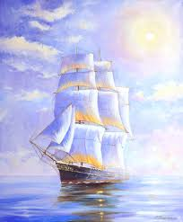

«Мона Лиза», «Джоконда» или «Портрет госпожи Лизы дель Джокондо» (Ritratto di Monna Lisa del Giocondo) – самая известная картина Леонардо да Винчи и, возможно, самая известная картина в мире. Больше пяти столетий Мона Лиза гипнотизирует мир своей улыбкой, природу которой пытаются объяснить многие учёные и историки. По последним данным, портрет был написан между 1503 и 1519 годами. Существует две версии картины кисти Леонардо, более ранняя находится в частной коллекции, написанная позднее - в экспозиции Лувра.
| Море | Пейзаж | Натюрморт |
|---|---|---|
| Корабль | Осень | Сад |
|  |